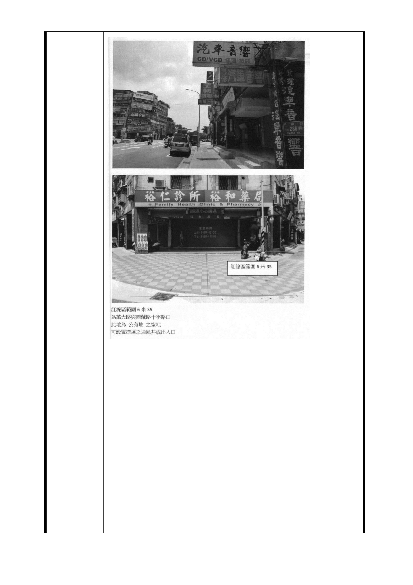

101.5.31
絕不接受政府聯合開發與土地徵收的條件
理由如下：
一、 行政程序有重大瑕疵：
捷運萬大線 LG03 站捷五預定開發用地住戶土地所有權人，在
中華民國一百年十一月二十九日、十二月七日兩次說明會前
，從未參與、從未被徵詢、從未得到任何取府官員通知我們
的家園要劃為捷運萬大線 LG03 站捷五預定開發用地，甚至部
分住戶竟然是這兩次說明會後經由其他住戶通知才得知此事
，然而從民國九十九年核定到一百年十一月，期間從未收到
政府通知隻字片語，就直接要把我們的家園變更為捷運用地
？我們不同意就要強制徵收？
二、 西藏路北側捷五預定開發用地，無都市更新必要：
捷運萬大線 LGO3 站捷五預定開發用地，半數為屋齡二十年
左右的公寓，結構仍十分完好，其餘屋齡三十年以上的公寓
均有固定修繕，並未達到破損老舊需要都市更新的情況，且
- 92 -